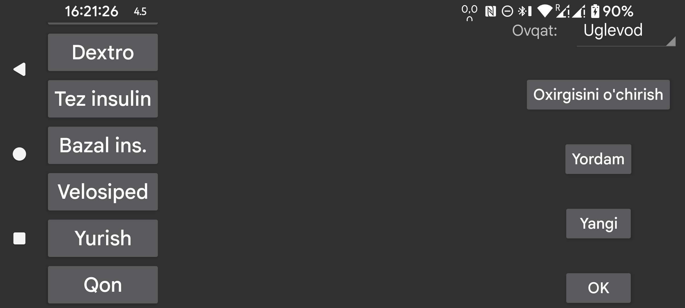

ar be de es fr hi it nl pl pt ru tr uk uz zh en
Bu yerda insulin, uglevod yoki jismoniy faollikni ko‘rsatish uchun grafikga qo‘shiladigan miqdorlar yorliqlarini yaratish, o‘chirish va o‘zgartirish mumkin.
Agar siz allaqachon ba’zi miqdorlarni saqlagan bo‘lsangiz, ular o‘z joylashuviga mos kelgan yorliqni saqlab qoladi. Demak ikkinchi o‘ringa boshqa nom bersangiz, avval ikkinchi o‘rindagi eski nom bilan saqlangan qiymatlar ham shu yangi nomni oladi.
Yorliqni o‘zgartirish uchun uning ustiga bosing.
Ovqat dan keyin qaysi yorliq ovqatlardagi uglevod miqdorini bildirishi ko‘rsatiladi. Shu yorliq uchun chap o‘rta menyudagi Yangi miqdor oynasida Ovqat tugmasi paydo bo‘ladi. Shu tugma yordamida tarkibiy qismlardan iborat ovqatni kiritish mumkin. Uglevodlar yig‘indisi shu yorliq ostida saqlanadi va keyin saqlangan qiymatning ovqatini tanlab, uni qayta ko‘rishingiz mumkin.